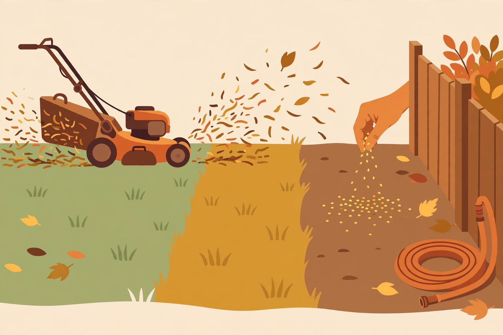

Lawn winter prep: the last mow and more

A lawn that goes into winter tall, wet-matted, or underfed comes out of spring patchy and weak. Three things matter before the freeze: the last mow, overseeding if your lawn needs it, and a deep watering. That's genuinely most of it.
1. The last mow: cut it, but not scalped
Keep mowing as long as the grass is growing — in many regions it keeps growing well into October or November. For the final cut, drop the deck one notch below your normal height (a bit shorter than usual, but nowhere near a scalp). The goal: short enough that the grass doesn't mat down under snow and leaves, long enough to keep feeding its roots.
- Never cut more than a third of the blade height at once. If the grass got away from you, take it down in two passes a few days apart.
- Sharp blade. A dull blade tears grass and leaves ragged tips that brown off and invite disease. Sharpen it before the final cuts.
- Clear the clippings situation: mulch-mowing the last cut is fine and returns nutrients; bagging is fine too. What matters is that the lawn isn't buried under clumps going into winter.
2. Overseeding: fill the thin spots
Overseeding means spreading grass seed over your existing lawn to thicken it up and repair bare patches. Early fall is the ideal window — soil is still warm enough for germination and weeds are slowing down — but if you're reading this late in the season, the advice is simple: sow only if the soil is still workable and daytime temperatures are reliably above freezing. Seed that doesn't germinate before winter mostly rots or gets eaten.
- Match your seed to your lawn. Use a grass seed blend suited to your region and your yard's sun exposure — cool-season grasses (like fescues and bluegrasses) for northern lawns, warm-season types for southern ones. Your local garden center knows what works locally; ask.
- Seed-to-soil contact is everything. Seed sitting on thatch or dead leaves won't germinate. Rake the thin spots down to soil, spread the seed, then press it in by walking over it or watering gently.
- Water lightly and often until the seed sprouts and is a few inches tall — then back off. New seed that dries out once dies.
3. Water deeply before the ground freezes
Fall is often drier than people realize, and grass goes dormant dehydrated in many yards. Once the leaves are handled and before the ground freezes hard, give the lawn one long, slow soaking — the kind that penetrates several inches. A well-hydrated lawn and soil handles freeze-thaw cycles better and greens up faster in spring.
- Then drain everything. Disconnect hoses, drain them fully, shut off exterior faucets or hose bibs from the inside valve if you have one, and drain any irrigation lines or bring timers inside. Frozen, split hoses and burst pipes are the classic "I forgot in October" repair bill.
What about fertilizing?
A late-fall fertilizer application is a standard part of cool-season lawn programs — the idea is that the grass stores the nutrients in its roots for spring. If you want to do it, use a product labeled for fall or winterizing lawns, follow the rate on the bag exactly (more is not better), and apply it when the grass is still growing but growth has slowed — not onto frozen ground, where it just runs off. If you're not sure or don't want the hassle, skipping it won't ruin your lawn; the mowing and watering matter more.
Skip the lawn-rolling trend. Rolling the lawn in fall is an old habit that does more harm than good — it compacts the soil, which is the opposite of what roots want. If the lawn is bumpy, top-dress with a thin layer of compost in spring instead.
The quick checklist
- Keep mowing while it's growing; final cut slightly shorter than normal.
- Overseed thin spots early in the window if soil is workable.
- One deep soak before freeze-up; then disconnect, drain, and store hoses.
- Optional: a labeled fall fertilizer at the bag rate before growth stops.
- Keep leaves off the grass — mulch-mow or clear them so light and air reach the blades.
Do these and the lawn basically sleeps through winter. Skip them and you'll spend April and May fixing what November could have prevented in an afternoon.